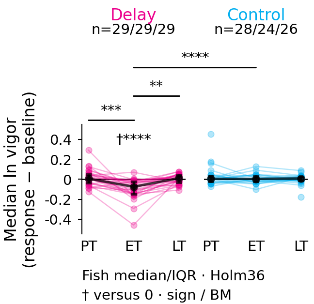
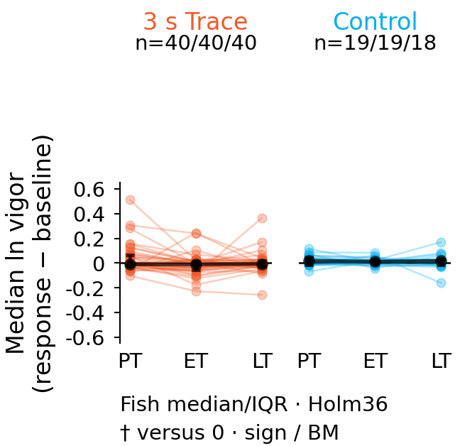

D · Delay

SVG · PDF · Freeze record
B = median natural-log bout vigor in response minus baseline, then median eligible trials within each fish/block. No-bout/invalid frames are NaN and excluded. Reference 0 = unchanged.
Exact sign tests for paired changes and comparisons with zero; Brunner–Munzel t tests for independent conditioned/control comparisons. One Holm correction covers all 36 tests across D/E. Fish are the units.
Delay ET is below baseline (p=0.0000552); its PT→ET change differs from controls (p=0.000120), and its ET→LT increase differs from controls (p=0.0000131). Trace has no significant result after Holm36. These analyses remain exploratory and assume independent fish; no day/tank adjustment.
Main whiskers are fish IQR. † denotes a test against zero; lines denote within/between-block group comparisons. Direct changes and pointwise bootstrap effects are in the files below.

SVG · PDF · Freeze record

SVG · PDF · Freeze record
Shared scaffold for Figure 1 E–H and whole Figure 2 · Frozen methods and limitations · 36 tests · Bootstrap effects
Both freezes passed specification 1.1.1 at 54.9 × 53.2 mm per panel. Whole figures require their own assembly checks. F/10 s Trace remains unavailable. Earlier comparisons are historical and have superseded statistics.
| panel | family | condition | left | right | test | n_pairs | n_conditioned | n_control | p_raw | p_holm36 | stars |
|---|---|---|---|---|---|---|---|---|---|---|---|
| D | zero | delay | 0 | 0 | exact two-sided sign test versus zero | 29 | — | — | 0.061428 | 1 | ns |
| D | zero | control | 0 | 0 | exact two-sided sign test versus zero | 28 | — | — | 0.34493 | 1 | ns |
| D | between | delay vs control | 0 | 0 | two-sided Brunner-Munzel; t calibration | — | 29 | 28 | 0.87717 | 1 | ns |
| D | zero | delay | 1 | 1 | exact two-sided sign test versus zero | 29 | — | — | 1.6242e-06 | 5.5224e-05 | **** |
| D | zero | control | 1 | 1 | exact two-sided sign test versus zero | 24 | — | — | 0.54126 | 1 | ns |
| D | between | delay vs control | 1 | 1 | two-sided Brunner-Munzel; t calibration | — | 29 | 24 | 4.2573e-09 | 1.5326e-07 | **** |
| D | zero | delay | 2 | 2 | exact two-sided sign test versus zero | 29 | — | — | 1 | 1 | ns |
| D | zero | control | 2 | 2 | exact two-sided sign test versus zero | 26 | — | — | 0.5572 | 1 | ns |
| D | between | delay vs control | 2 | 2 | two-sided Brunner-Munzel; t calibration | — | 29 | 26 | 0.75777 | 1 | ns |
| D | within | delay | 0 | 1 | exact two-sided sign test on paired fish changes | 29 | — | — | 1.5236e-05 | 0.00048757 | *** |
| D | within | control | 0 | 1 | exact two-sided sign test on paired fish changes | 24 | — | — | 0.83882 | 1 | ns |
| D | change | delay vs control | 0 | 1 | two-sided Brunner-Munzel on paired fish changes; t calibration | — | 29 | 24 | 3.6398e-06 | 0.00012011 | *** |
| D | within | delay | 1 | 2 | exact two-sided sign test on paired fish changes | 29 | — | — | 0.00010372 | 0.0032152 | ** |
| D | within | control | 1 | 2 | exact two-sided sign test on paired fish changes | 24 | — | — | 0.83882 | 1 | ns |
| D | change | delay vs control | 1 | 2 | two-sided Brunner-Munzel on paired fish changes; t calibration | — | 29 | 24 | 3.7294e-07 | 1.3053e-05 | **** |
| D | within | delay | 0 | 2 | exact two-sided sign test on paired fish changes | 29 | — | — | 0.45826 | 1 | ns |
| D | within | control | 0 | 2 | exact two-sided sign test on paired fish changes | 26 | — | — | 0.5572 | 1 | ns |
| D | change | delay vs control | 0 | 2 | two-sided Brunner-Munzel on paired fish changes; t calibration | — | 29 | 26 | 0.88181 | 1 | ns |
| E | zero | trace | 0 | 0 | exact two-sided sign test versus zero | 40 | — | — | 0.63583 | 1 | ns |
| E | zero | control | 0 | 0 | exact two-sided sign test versus zero | 19 | — | — | 0.35928 | 1 | ns |
| E | between | trace vs control | 0 | 0 | two-sided Brunner-Munzel; t calibration | — | 40 | 19 | 0.33985 | 1 | ns |
| E | zero | trace | 1 | 1 | exact two-sided sign test versus zero | 40 | — | — | 0.15386 | 1 | ns |
| E | zero | control | 1 | 1 | exact two-sided sign test versus zero | 19 | — | — | 0.16707 | 1 | ns |
| E | between | trace vs control | 1 | 1 | two-sided Brunner-Munzel; t calibration | — | 40 | 19 | 0.006565 | 0.19039 | ns |
| E | zero | trace | 2 | 2 | exact two-sided sign test versus zero | 40 | — | — | 0.42959 | 1 | ns |
| E | zero | control | 2 | 2 | exact two-sided sign test versus zero | 18 | — | — | 0.48068 | 1 | ns |
| E | between | trace vs control | 2 | 2 | two-sided Brunner-Munzel; t calibration | — | 40 | 18 | 0.12926 | 1 | ns |
| E | within | trace | 0 | 1 | exact two-sided sign test on paired fish changes | 40 | — | — | 0.0022214 | 0.066643 | ns |
| E | within | control | 0 | 1 | exact two-sided sign test on paired fish changes | 19 | — | — | 0.35928 | 1 | ns |
| E | change | trace vs control | 0 | 1 | two-sided Brunner-Munzel on paired fish changes; t calibration | — | 40 | 19 | 0.032808 | 0.91864 | ns |
| E | within | trace | 1 | 2 | exact two-sided sign test on paired fish changes | 40 | — | — | 0.42959 | 1 | ns |
| E | within | control | 1 | 2 | exact two-sided sign test on paired fish changes | 18 | — | — | 1 | 1 | ns |
| E | change | trace vs control | 1 | 2 | two-sided Brunner-Munzel on paired fish changes; t calibration | — | 40 | 18 | 0.73261 | 1 | ns |
| E | within | trace | 0 | 2 | exact two-sided sign test on paired fish changes | 40 | — | — | 0.42959 | 1 | ns |
| E | within | control | 0 | 2 | exact two-sided sign test on paired fish changes | 18 | — | — | 0.48068 | 1 | ns |
| E | change | trace vs control | 0 | 2 | two-sided Brunner-Munzel on paired fish changes; t calibration | — | 40 | 18 | 0.38495 | 1 | ns |